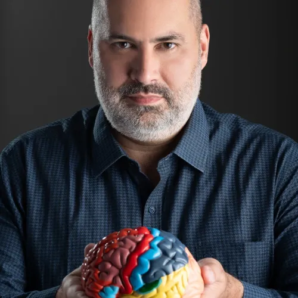

Há mais de 20 anos, Paulo Tomazinho atua na formação de professores com o objetivo de transformar o ensino em aprendizagem de verdade.
Doutor em Educação, pesquisador e formador docente, já contribuiu para o desenvolvimento de mais de 20 mil professores em escolas e redes de ensino pelo Brasil.
É fundador da Meta Aprendizagem, cofundador da Moonshot Educação, idealizador da Escola de Didática e Google Certified Innovator.
Seu trabalho une ciência da aprendizagem, didática e aplicação prática em sala de aula.
É essa experiência que está por trás deste diagnóstico, criado para entender a realidade da sua escola antes de indicar os próximos caminhos de formação.